Nikaho Art Project
白瀬の航跡と、大地の記憶。
台風の接近する空の下、浄蓮寺から漁港、記念館、いちじく畑へ。
旧金浦町・大竹地区を歩いた一日を、
写真と記録で辿る。
Index
2026年8月27日、にかほ市アート・プロジェクト DAY 2。台風接近・強風のなか、体調と安全を最優先に、天候に従って行程を進めた。
Chapter I
The Man
文久元年、出羽国由利郡金浦村に生まれた一人の少年は、11歳の誓いから85年の生涯を懸けて、世界の果てを目指した。
I — 01 ／ Birth & the Vow
白瀬矗（しらせ・のぶ）は文久元年（1861年）、出羽国由利郡金浦村——現在の秋田県にかほ市——の浄蓮寺に生まれた。長男として寺を継ぐ運命にあったが、探検家を志し陸軍軍人の道を選ぶ。次男が寺を継ぎ、その系統は現在の浄蓮寺として続いている。
11歳のとき、寺子屋の師・佐々木節斎から北極探検の話を聞き強く心を打たれ、「将来必ず北極へ行く」と決意する。師はこのとき、探検家になるための絶対条件として、次の「五つの戒め」を授けた。
白瀬はこの過酷な戒めを生涯にわたり頑なに守り抜いた。この鉄の意志こそが、後の極地探検を支える精神的支柱となる。
I — 02 ／ Kurile Islands & the Turn South
北極探検の足がかりとして陸軍に入隊した白瀬は、千島列島の探検（報效義会）に参加する。しかしそこでの越冬生活は想像を絶するものだった。壊血病や飢餓により隊員が次々と倒れる、凄惨を極める経験である。
その後、アメリカのロバート・ピアリーが北極点到達を果たしたというニュースが世界を駆け巡る。先を越された白瀬は、即座に目標を地球の反対側、いまだ人類が到達していない「南極」へと大きく転換した。
児玉源太郎（台湾総督）の進言も後押しとなり、白瀬は北極から南極へと目標を変更。千島列島での経験は、その後の過酷な訓練の礎ともなった。
Turning PointChapter II — Into the Ice
南極への挑戦
資金援助を拒まれ、「狂気の沙汰」と嘲笑されながらも、わずか204トンの木造漁船は南極を目指した。
S 66°33′ — Antarctic Circle
Chapter II
Into the Ice
II — 01 ／ The Kainan Maru Sets Sail
南極探検の計画を帝国議会に提出したものの、当時の日本政府からの資金援助は一切得られなかった。「無謀だ」「狂気の沙汰だ」と冷笑される中、大隈重信の後援会長就任や、国民や学生からのなけなしの義援金により、ようやく資金を調達する。
彼らが手に入れたのは、わずか204トンの小さな木造漁船。これを「開南丸」と名付け、1910年（明治43年）、白瀬隊長以下30名の隊員と28頭の樺太犬とともに、決死の覚悟で芝浦を出航した。
後援会長を務めた大隈重信は、テロで片足を失っていたため自ら同行することはなかったが知恵を貸し、自邸の庭を隊の訓練場所として提供した。
Ōkuma Shigenobu探検旗には三宅雪嶺デザインの「南十字星」があしらわれた武骨でシンプルな船旗が用いられ、現在は白瀬記念館のシンボルマークとなっている。
II — 02 ／ Ross Sea & Yamato Yukihara
シドニーでの資金難による長期のテント生活など、幾多の苦難を乗り越え、1912年（明治45年）1月、ついに南極のロス海に到達する。巨大な氷壁に阻まれながらも、白瀬隊長ら突進隊は氷点下20度の猛吹雪の中、犬ゾリで未踏の内陸部へと進んだ。
「南緯80度05分、
最早一歩も前進する克はず」
——食料の限界に達し、これ以上の前進を断念する。
1912年1月28日、到達した南緯80度05分・西経156度37分の一帯を「大和雪原（やまとゆきはら）」と命名し、日章旗を掲げて日本領土と宣言した。
当時の日本政府はその重要性を十分に理解していなかったが、欧米諸国は白瀬の功績を深く警戒していた。その結果、ポツダム宣言受諾後のサンフランシスコ講和条約において、日本に「南極の領有権を放棄する」という一筆をわざわざ明記させた。白瀬自身は生涯にわたり、この領土の行く末を気にかけていたという。
II — 03 ／ Retreat, Survival & Record
当時、ノルウェーのアムンセンが人類初の南極点到達を果たし、イギリスのスコット隊（王立地理学会支援）も学術調査を兼ねて向かったが、帰路で全員が遭難死を遂げていた。白瀬隊は極点到達には至らなかったものの、隊員の命を最優先して途中で引き返す決断を下し、全員が無事に生還を果たした。
探検の真の目的は名誉だけでなく、新航路の開拓や科学調査、そして「領土宣言」による国際的地位の確立にあった。日清・日露戦争を経た当時の日本にとって、これは国民が重税と犠牲を強いられる中での、国家の威信を懸けた挑戦でもあった。
当時、日本人が誰も見たことのなかったペンギンを捕獲し、剥製として持ち帰るなど学術調査にも大きく貢献した。また日本最古のドキュメンタリー映像を撮影しており、現在は国立映画アーカイブにてデジタルリマスター版が保管・公開されている。
Academic Results ／ 学術的成果Chapter III — After the Ice
不屈の晩年
熱狂の帰国の裏で、隊長ひとりが背負った一億円の借金。74歳、その完済までの20年。
1912 – 1946
Chapter III
After the Ice
III — 01 ／ A Debt of a Hundred Million Yen
奇跡の生還を果たし、国民から熱狂的な歓迎を受けた白瀬隊だったが、その栄光の裏には過酷な現実が待っていた。探検費用の不足により、隊長である白瀬個人の名義で膨大な借金を背負っていたのである。現在の貨幣価値に換算して、その額は約1億円にも上った。
白瀬は一切の責任を背負い、自宅を売り払い、娘の着物まで手放す。そして極地の記録フィルムを携え、日本全国から台湾、満州、朝鮮半島に至るまで、20年以上にわたり借金返済のための講演行脚を続けた。
そして74歳にして、ついにその莫大な借金を完済する。しかし晩年は豊田市の小さな借家でひっそりと暮らし、昭和21年（1946年）、85歳で腸閉塞のため静かに息を引き取った。傍らには、南極の氷を溶かして飲んだウィスキーの空き瓶だけがあったと言われている。
辞世の句 — Shirase Nobu
我れ無くも 必らず捜せ 南極の
地中の宝 世にいだすまで
彼が信じた南極の地下資源や科学的価値は、のちの時代に現実のものとなる。
III — 02 ／ A Legacy that Endures
白瀬の不屈の探検精神は、現在の日本の南極地域観測隊へと脈々と受け継がれている。手ぬぐいなどの記念品が印刷され広く配布されるなど、当時から広報活動が行われてきた。
現代においても、ドラマ『南極大陸』の最終回で白瀬隊の出港シーンが描かれるなど、その挑戦は今なお人々の心を打っている。
昭和29年、金浦文化協会により記念碑が建立され、除幕式が行われた。金浦は今も「郷土の英雄」として白瀬矗を語り継いでいる。
Konoura Bunka KyōkaiChapter IV
The Memorial Museum
黒川・岩潟の池のほとりに建つ、円錐形のシンボリックな記念館。南極の「今」と「過去」がここに集う。
にかほ市黒川字岩潟15-3
IV — 01 ／ A Cone by the Pond
白瀬南極探検隊記念館は、黒川・岩潟の美しい池のほとりに建つ、円錐形のシンボリックな建築が特徴。館内には先人たちの偉業を肌で感じられる貴重な資料が多数展示されている。
ドーム型シアターでは南極と北極の神秘的なオーロラ映像を大画面で上映しており、極地の美しい自然現象を疑似体験できる。また現在の南極・昭和基地の様子を伝えるライブカメラ映像も展示されており、白瀬隊が夢見た「その先」の今を見ることができる。
フィールドワークでは南極の氷や隕石に実際に触れる体験も行われた。午後14:30からはNPO法人スタッフによる詳細な館内ガイドツアーが実施された。
Field Note南極の氷に、触れる。
オーロラの映像、昭和基地のライブカメラ、そして手のひらに載る一万年前の氷——記念館は南極を「見る」場所ではなく「触れる」場所として設計されている。
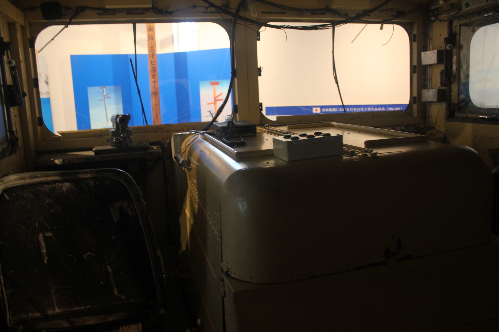
IV — 02 ／ Mechanical Heritage
1968年（昭和43年）、日本の南極観測隊（第9次隊）が史上初の南極点往復探検（約5,200km）を成功させた際に実際に使用された雪上車「KD605」の実物が展示されている。その歴史的価値から、2014年には日本機械学会により「機械遺産」に認定された。
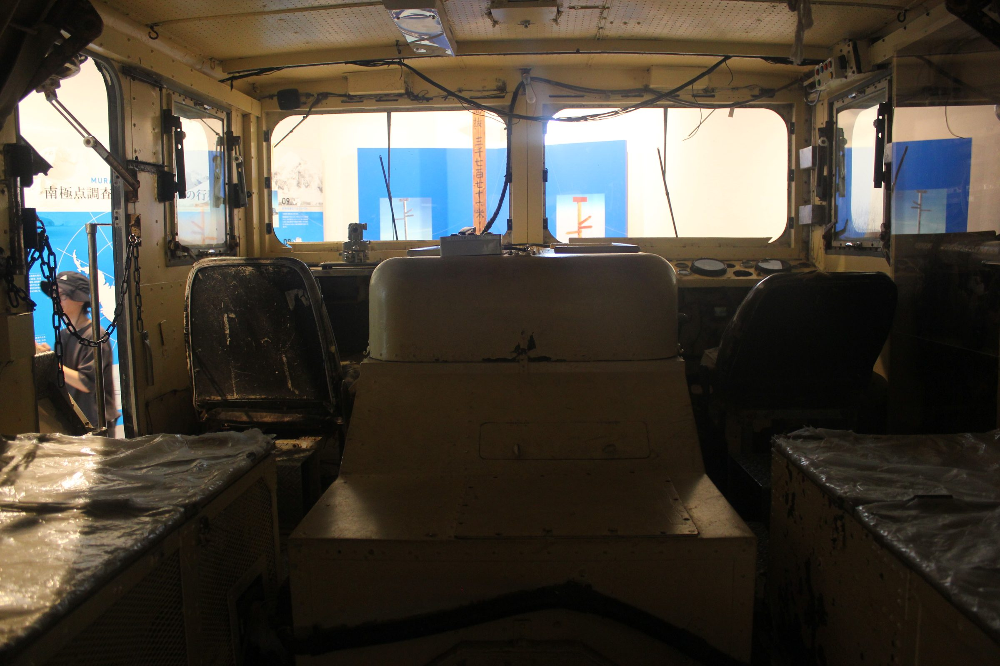
記念館の周囲は「南極公園」として整備されており、探検船「開南丸」の実物大スケールを模した大型遊具が設置されている。当時の船の小ささを実感できるほか、実際に使用されていたスクリュープロペラブレードなども展示されており、子供から大人まで歴史を体感できる空間となっている。
開南丸、実物大。
わずか204トン。南極公園に置かれたその輪郭の前に立つと、30名と28頭がこの船に乗り込んだという事実が、数字ではなく体積として迫ってくる。
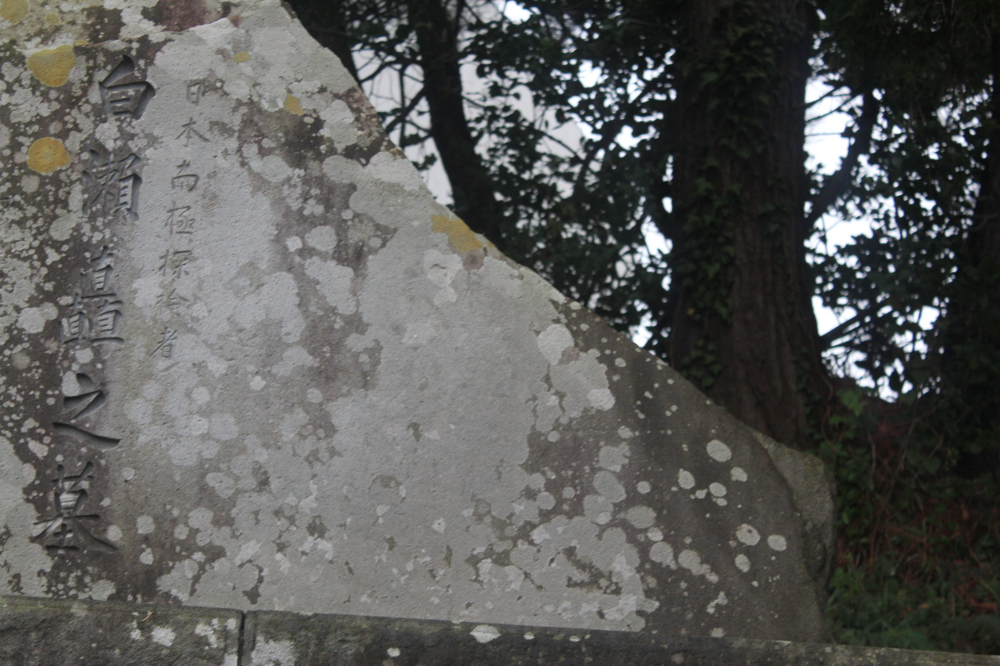
記念館裏手の白瀬隊長の墓。「日本南極探検者 白瀬矗之墓」と刻まれる。一同で訪問し、合掌にて敬意を表した。
隊員たちが命がけで持ち帰った南極の石やペンギンの剥製。白瀬矗が実際に着用していた防寒服、犬ゾリの模型、借金返済のために全国を回った際の記録資料など、生々しい歴史の証人が並ぶ。
参加者の一人は、南極に犬を置いてきたエピソードに心を動かされ、ペンギンが蹴られる映像記録に時代による倫理観の変化を感じたと振り返っている。館の個人崇拝的な性格に違和感を覚えつつも、それが結果的に人々の生活や文化の継承に寄与してきた側面を評価する声もあった。
A Visit RememberedChapter V
Roots of a Name
織田信長に追われた一向宗門徒が北前船で流れ着いた地。そこに残された、奇跡の帰還を果たした一羽のペンギン。
V — 01 ／ From Ishiyama to Konoura
浄蓮寺（じょうれんじ）は浄土真宗大谷派の寺院である。その歴史の背景には、織田信長と本願寺が10年にわたり激しく争った「石山合戦」がある。その後、徳川家康の時代に本願寺は東西に分立し、権力が削がれた歴史の流れを、この寺も汲んでいる。
信長に追われた白瀬村（しらせむら）の一向宗門徒たちは、布教のため北前船に乗り北海道を目指した。しかし航海の途中、現在の秋田県にかほ市金浦（このうら）に停泊し、そこにお寺を開いたのが浄蓮寺の始まりである。
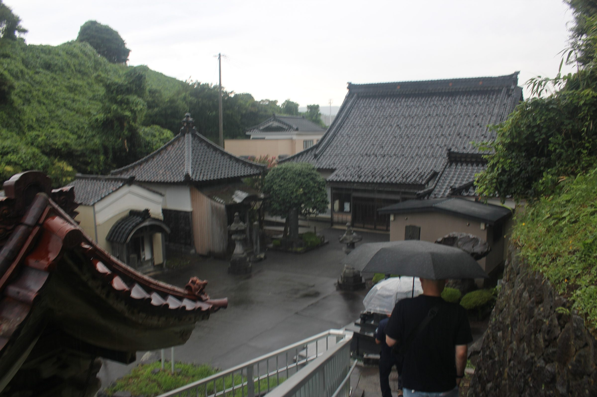
Jorenji — 雨の境内へ
北前船で北上しながら布教を行った一向宗門徒たちの影響により、現在でも北海道や秋田市、そして金浦周辺には「白瀬」という苗字が多く見られる。
A Surname that Traveled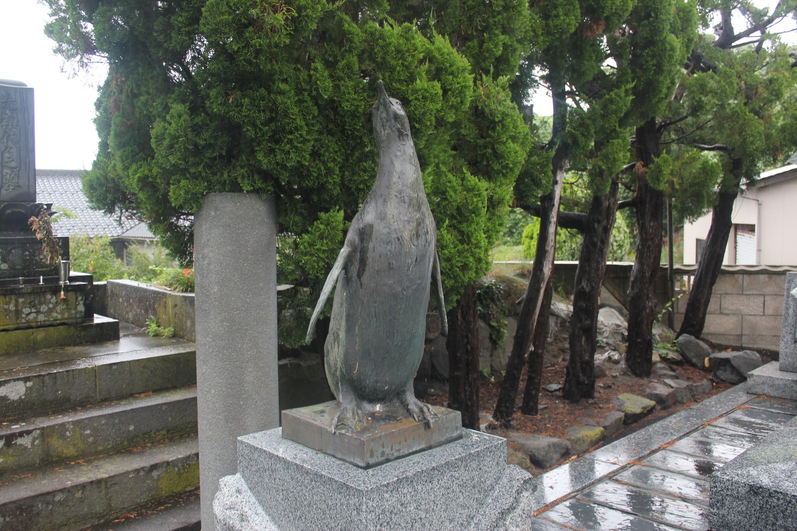
V — 02 ／ The Penguin that Came Home
このペンギンの銅像はもともと、開南丸が出港した東京・芝浦の埠頭公園に、探検25周年を記念して建立された記念碑の一部だった。大隈重信の妻らが発起人となり設置されたものである。
戦後、ペンキを塗られ、くちばしを折られる無惨な状態に。修復の後、新しく作り直された像は東京に、修復されたオリジナルの像は白瀬中尉ゆかりのこの浄蓮寺へと寄贈された。
かつて本堂にあった白瀬中尉関連の品々は、現在すべて白瀬南極探検隊記念館へ移管・アーカイブ化されている。本堂には今も、「南極探検隊長」の名を記した寄進札が掲げられている。
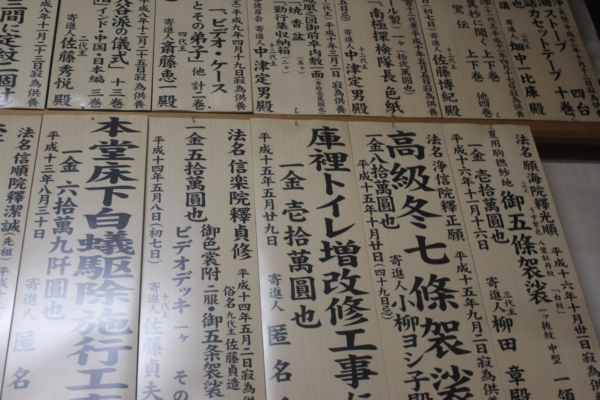
Main Hall — 本堂の寄進札
Chapter VI — Written in the Land
鳥海山と流れ山の記憶
約2500年前の山体崩壊、そして1804年の一夜の隆起。海だった場所は、田園に浮かぶ九十九の島となった。
Chapter VI
Written in the Land
VI — 01 ／ The Birth of the Nagareyama
周辺の田んぼに点在する小山は「流れ山」と呼ばれる。約2500年前、鳥海山の山体崩壊によって崩れた土砂が流れ込んでできた特異な地形である。巨大な流れ山の間には集落が形成されており、非常に細く曲がりくねった道が続く。
かつては木製の波除け（防風林）もあったが、波の浸食により集落の移転（平沢の新町など）を余儀なくされた過酷な歴史も持つ。
VI — 02 ／ The Sea that Vanished Overnight
鳥海山の山体崩壊と大地震が生み出した、世界でも類を見ない特異な地形——象潟（きさかた）。「東の松島、西の象潟」と称され、松尾芭蕉も訪れた景勝地だった。1804年の象潟地震により、地盤が約2メートルも隆起。海だった場所が突如として干上がり、陸地へと変貌を遂げた。
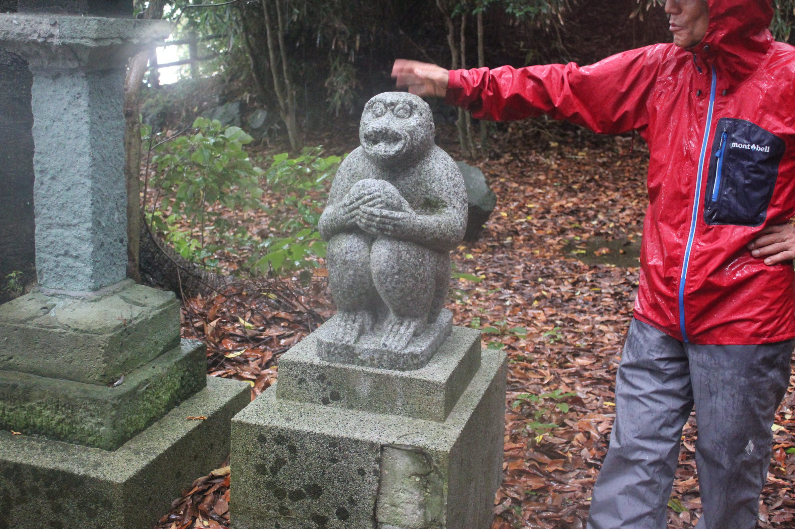
雨の参道にたたずむ石像
VI — 03 ／ Hills as Shelter, Hills as Faith
先人たちは貴重な平地（田んぼ）を潰さず、公民館や学校などの公共施設をあえて「流れ山の小山の上」に建設した。これが津波発生時の自然の避難所（高台）として機能している。
流れ山の中で最大とされる「勢至山（せいしやま）」には「三十三観音」の石仏が配置され、向かい側の山では各地域が協力して88ヶ所の弘法大師像を建立し、1年がかりで巡礼するなど、厚い信仰心が地域を繋いできた。
VI — 04 ／ Walking the Ninety-Nine Islands
九十九島の裏町には、巨大な流れ山の間に非常に細く曲がりくねった道が続き、はぐれないようガイドの案内に従って歩く必要がある。時が止まったようなノスタルジックな風景が広がり、絶好の写真撮影スポットが点在する。
白瀬隊長の銅像の下には、2羽のペンギン像が設置されている。作者は「東洋のロダン」と称され、早稲田大学の大隈重信像なども手掛けた明治〜戦後の大彫刻家・朝倉文夫。なぜこの場所に朝倉文夫の作品があるのか——その歴史的背景は現地でガイドより解説される。
Asakura Fumio's Penguins参考資料として「流れ山」に関する書籍も配布された。散策には強風など天候への注意が呼びかけられている。
Chapter VII
The Wave-Break Wall
冬の北西風と荒波から村を守るため、江戸の人々が一つひとつ積み上げた石の壁。約600mが今も現存する。
VII — 01 ／ A Craft of Necessity
飛（とび）集落などの海岸線には、国の指定史跡（平成9年指定）である「由利海岸波除石垣」が約600mにわたり現存している。冬の強烈な北西の季節風や波浪、塩害から農地と集落を守るため、江戸時代から地元の人々がコツコツと積み上げてきた。1728年に本荘藩へ修理願いが出された記録があり、それ以前からの歴史を持つ。
鳥海山の山体崩壊等で海に流れ出て丸くなった自然石を利用。外側には30〜50cmの大きな石を配し、内側には小割石や砂利を詰めている。これにより、波を被っても水が石の隙間を浸透してサッと抜ける「水抜き構造」を実現し、強い波力にも耐える高度な工夫が施されている。後に本荘藩による修復も経て、現在も町を波から守る重要な防壁として機能し続けている。
フィールドワークでは「飛の崩れ」も視察。岩が積み上げられた独特な地形に、自然の脅威と美しさを体感した。
Chapter VIII
Life by the Sea
夕方の浜辺に響いた競りの声、多彩な漁法、そして次世代へと継がれる船の舵。
VIII — 01 ／ A Local Hero, Then & Now
南極探検から帰還後、白瀬中尉は日本中で「南極フィーバー」を巻き起こした金浦の偉人となった。現在も第60次を超える南極観測隊が活動中で、約30名の越冬隊が、太陽が昇らない過酷な「極夜」の環境下で、地球温暖化など地球規模の課題を調査している。
南極の環境は年間100日が沖縄の台風並みの強風になるという。白瀬研究事業「白瀬100」（入会金3,000円）の案内や、観測船「しらせ」の歓送迎活動もあわせて紹介された。
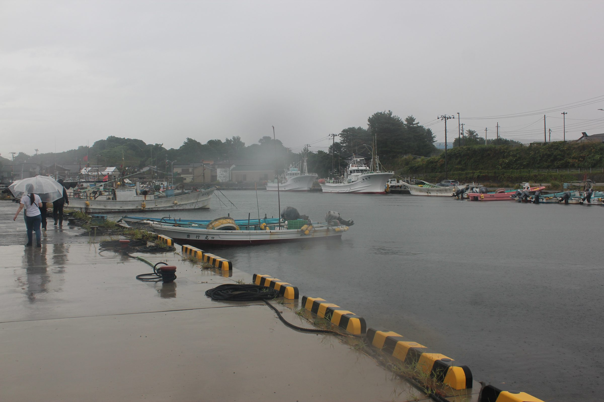
台風接近の金浦漁港。雨の岸壁を、傘を傾けて歩く。
VIII — 02 ／ Fishing Craft & the Evening Auction
金浦は強い西風が吹くため、昔は船のバラスト水代わりに石を積んで安定させていた。漁船に積まれた「箱」の有無で底引き網船かを見分けられるという。
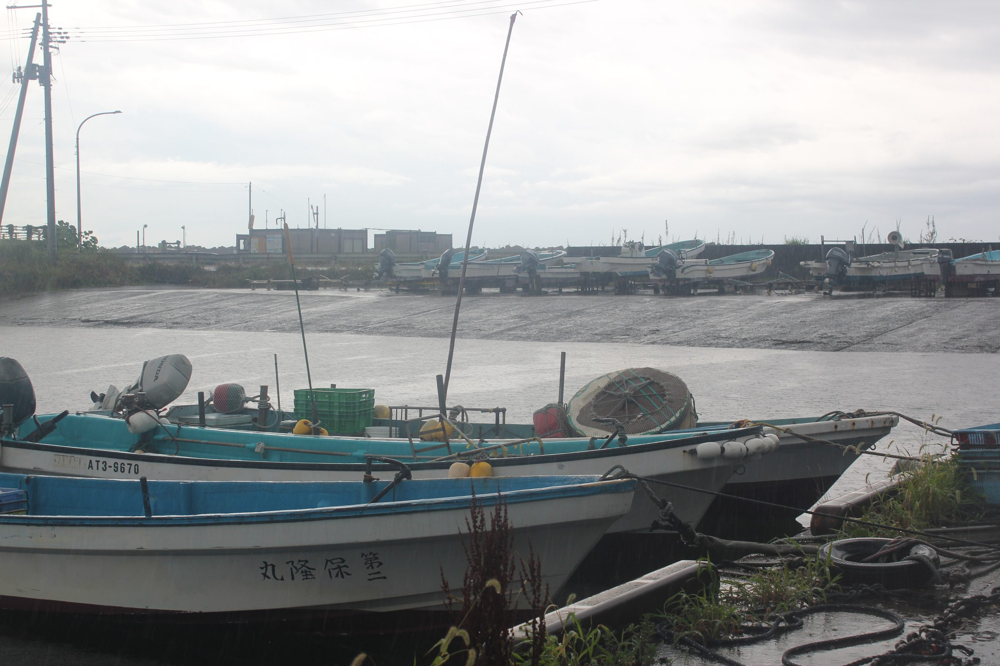
強い西風に備え、多くの船は陸へ上げられていた
網を海底に沈めて引く漁法。秋口はズワイガニやタラが狙い目。
魚が自ら入り込む仕組みで、まるで「海のコンビニ」。
魚の通り道に網を仕掛ける伝統的な漁法。
かつての漁港は夕方5時から7時にかけて帰港する船で賑わった。水揚げされたばかりの魚はすぐに氷を敷いたトロ箱に並べられ、浜辺で直接「競り」にかけられた。競り落としたタラなどをその場でさばいて刺身にする、活気に満ちた情景が日常だった。
The Evening AuctionVIII — 03 ／ Changing Waters, Enduring Festival
近年、海洋環境の変化により秋田名物のハタハタの漁獲量が減少している。その代わりに急増しているのが「アブラツノザメ」。骨がなく食べやすいため刺身として親しまれるほか、地元の学校給食や病院食にも活用され、新たな食文化として定着しつつある。加工された「サメジャーキー」は特産品として親しまれている。
毎年2月4日に開催される、350年以上の歴史を持つ神事。極寒の中、巨大な「寒ダラ」を担いで雪の町を練り歩き、神社に奉納する、金浦の冬を象徴する勇壮な祭りである。
高齢化が課題となる漁業界にあって、金浦漁港では秋田県内最年少となる26歳（現47歳）で船長に就任した人物が活躍中。20代の若い船員も共に乗船し、次世代への技術継承と活気に満ちた船団運営が行われている。
Next Generation秋田の食文化としては、納豆発祥の伝説も語り継がれる。源義家（八幡太郎）の「後三年合戦」に由来するとされ、煮豆を藁に詰めて移動した際、強力な納豆菌の作用で発酵し、現代の糸引き納豆の原型になったと伝わっている。
Chapter IX
The Northern Fig
石だらけの沼地を切り拓いた先人の手が、日本最北端のいちじく産地を育てた。水を好むいちじくにとって、この降りしきる雨は恵みでもある。
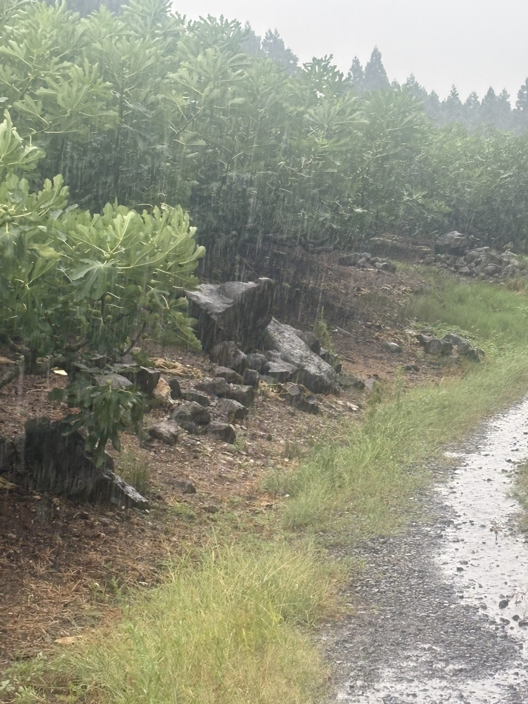
IX — 01 ／ Sixty Years from a Swamp
大竹地区は、いちじくの営利栽培において日本最北端に位置する。昭和30〜40年代頃、農協の主導により荒れ地を利用して栽培が開始された。
元々「沼地」で水はけが悪く、大小の石がゴロゴロ転がる厳しい環境だったが、水を好むいちじくにとっては好条件だった。先人たちが手作業で石を取り除き、海風と鳥海山からの伏流水を活かしながら、約60年の歴史を持つ産地へと育て上げた。
主力品種は寒さに強い「ブルンスウィック」。全国的な主流である「一文字仕立て」は行わず、雪害や海風を防ぐために枝を横へ低く這わせる独自の「自然形（ブッシュ状）」を採用している。
IX — 02 ／ Pruned to the First Node
毎年冬前に根元の1節だけを残して剪定し、春にそこから新梢を伸ばすため、木はゴツゴツとした独特の形状になる。1枚の葉に1つの実をつけるが、冬の訪れが早いため全体の約2/3程度しか完熟に至らない。最大の天敵であるカミキリムシの被害に対しても、極力農薬に頼らず地道な手作業での駆除が続けられている。
IX — 03 ／ From Preserve to Product
樹上で完熟する期間が極端に短いため、生食用の収穫は最初の数個に限られる。そのため、まだ硬い青いうちに収穫し保存食として「甘露煮」にする食文化が古くから根付いている。
現在ではこの伝統に留まらず、年間を通じて全国の飲食店等へ提供できるよう、ピューレやチャツネなどの加工品開発にも力を入れている。道の駅「ねむの丘」でのソフトクリームや、文化創造館でのジャム作りなど、多角的な商品展開で販路を拡大している。
産地は生産者の高齢化や後継者不足の課題に直面しているが、約5年前には横山君のような新規就農者が加わるなど、技術の継承が始まっている。公式キャラクター「いちじく一男」を擁する人気マルシェイベント「いちじくいち」の開催や、中学生への出前授業（いちじくカフェの考案）など、地域ぐるみでの啓蒙活動も活発である。
Passing the Torch青いうちに、煮る。
樹上で完熟する期間が極端に短いこの土地では、硬い青い実を甘露煮にする保存の知恵が、そのまま食文化になった。
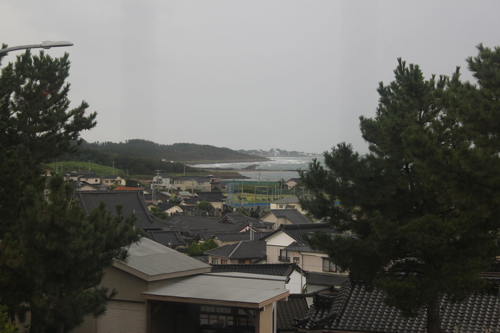
高台から望む金浦。瓦屋根の連なりの先に、荒れた日本海が広がる。流れ山の上に公共施設を置く知恵が、この地形からよく見える。
Chapter X
Field Notes — Aug 27, 2026
台風の接近する空の下、九十九島から記念館へ。記録者たちが見て、聞いて、考えたこと。
X — 01 ／ Morning Briefing, Day Two
台風の影響により強風。体調と安全を最優先とし、無理のない行動を。午前は予定通り進行するが、午後は天候悪化の際に柔軟に行程を変更する方針が共有された。出発後は昼までトイレのタイミングがないため、集合前に済ませておくことも案内された。
Weather & Safety九十九島の裏町を散策（流れ山）。記念館裏手の白瀬隊長のお墓を訪問し、合掌にて敬意を表す。
NPO法人スタッフによる詳細な館内ガイドツアーを実施。
白瀬隊長銅像下の朝倉文夫作ペンギン像を鑑賞。スマートフォンに「デジタルミュージアム」のリンクを共有。
X — 02 ／ The Route
白瀬矗の墓参りとトヨヒラ氏による解説。港での島・神社見学、漁師エイジ氏の講話。
岩が積み上げられた独特な地形を視察し、自然の脅威と美しさを体感。
南極の氷や隕石に触れ、白瀬探検隊の歴史と過酷な環境について学習。
鳥海山の山体崩壊による地形を利用した「北限のいちじく」栽培と、一次産業の歴史を学ぶ。
X — 03 ／ Voices
白瀬記念館には個人崇拝的な違和感を覚えつつも、それがプロパガンダとして結果的に人々の生活や文化を維持してきた側面を評価。今後は「個人」から「行為や文化」の保存へ組み替える視点を提唱した。いちじく栽培については、山体崩壊の土地を活用する合理性に感銘を受け、科学的根拠より経験則で根付いた歴史の美しさに触れた。元滝の伏流水が今日の産業に繋がる点も腑に落ちたという。雨の中の視察や、船に乗れなかった無念さも、一つの貴重な経験として捉えている。
勢至公園の桜撮影以外でじっくり街を巡るのは初めてで、新たな発見が多かった。白瀬記念館では南極に犬を置いてきたエピソードに同情し、白瀬矗の「辞世の句」に心打たれ、夏の暑さで低下していたモチベーションが回復。ペンギンが蹴られる映像から倫理観の時代変化を感じるなど、多角的な気づきを得た。
各所で人々の生の声を聞けたことを何よりの収穫とし、この土地で自分たちに何ができるかを、これから具体的に検討していきたいと語った。
白瀬南極探検隊記念館での解説者として同行。南極の過酷な環境——年間100日が沖縄の台風並みの強風になること——を解説。白瀬研究事業（入会金3,000円）の案内や、観測船「しらせ」の歓送迎活動を紹介した。
旧象潟町生まれ・旧仁賀保町育ちの大学2年生。皆と体験を共有できた喜びとともに、にかほ市の魅力をこれから発信していきたいと意気込んだ。
現地では、浄蓮寺と港をトヨヒラ氏が案内し、金浦漁港では漁師のエイジ氏が講話を行った。記念館ではNPO法人スタッフによる館内ガイドツアーが実施された。
Also on the RoadX — 04 ／ Wrap-Up & Outlook
地域の自然——鳥海山の伏流水や山体崩壊が生んだ地形——と、歴史——白瀬探検隊、そして一次産業——が密接に結びついていることが、今回の視察を通じて再確認された。
「個人」の顕彰から「行為や文化」の保存へ——この組み替えの視点は、白瀬矗という一人の探検家の物語を、金浦という土地が積み重ねてきた営みの記録として読み直す道筋を示している。
From Individual to Practice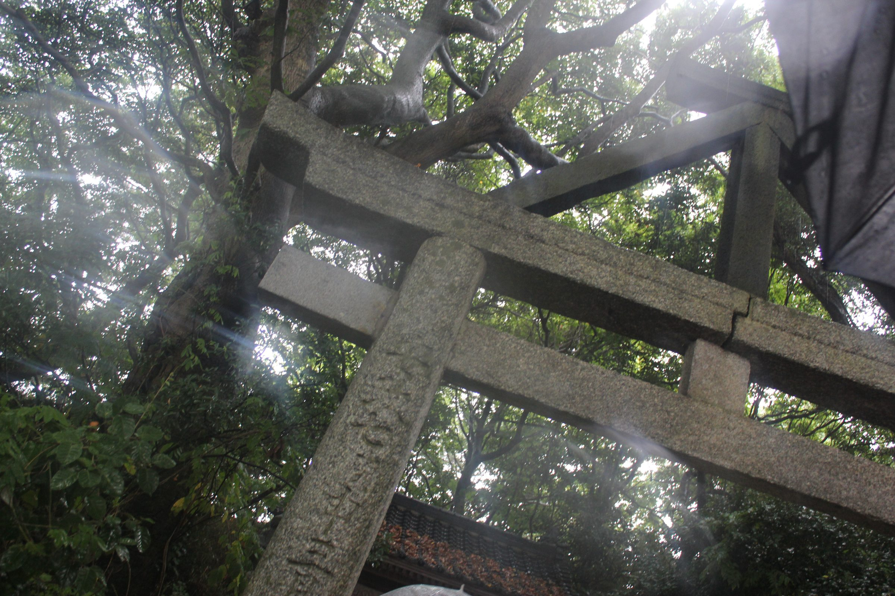
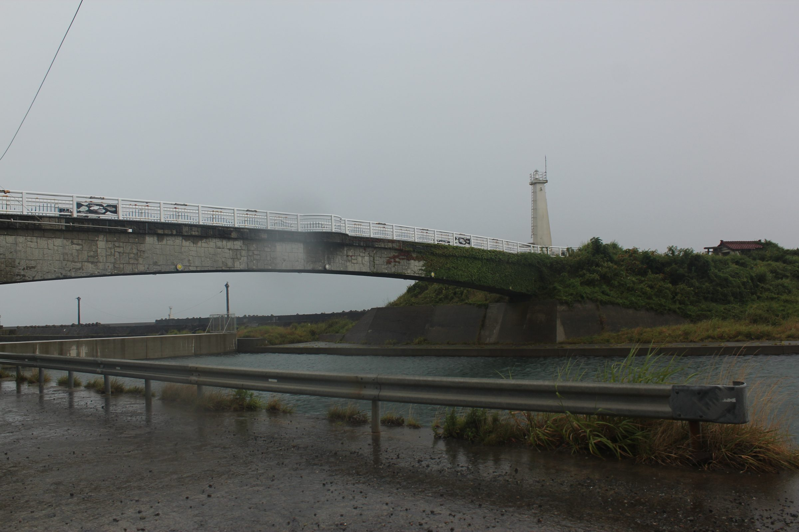
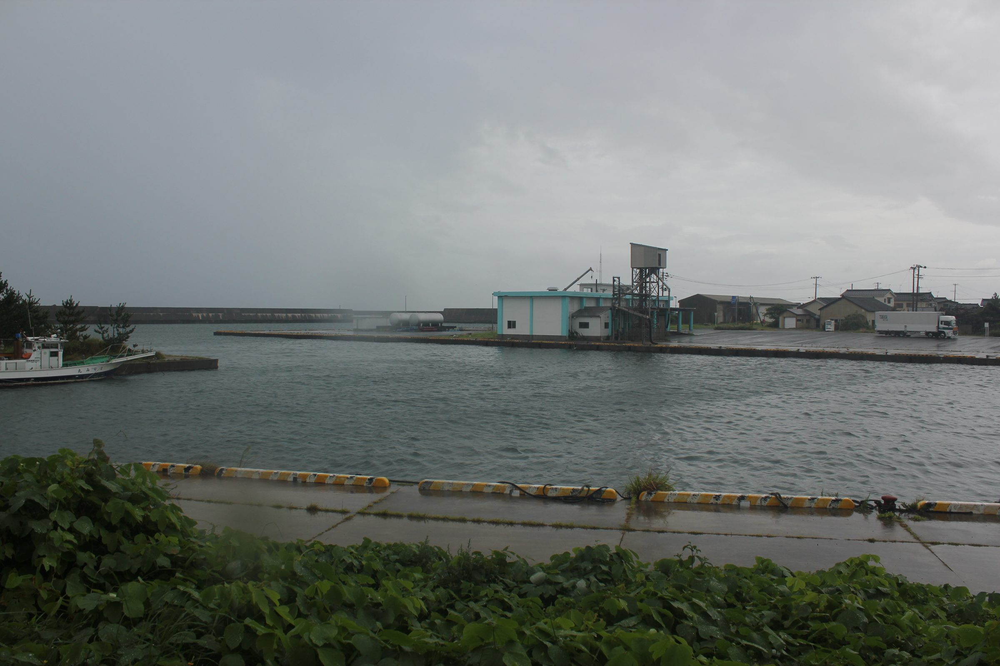
本ページ『金浦大全』は、にかほ市アート・プロジェクト DAY 2（2026年8月27日・旧金浦町／大竹地区）のフィールドワークに際して収集された記録資料9点——音声ガイド、ツアー要録、ブリーフィング資料、参加者の所感——と、現地撮影写真を統合し再構成した探訪記録である。
取材協力：にかほ市／秋田県／秋田公立美術大学／白瀬南極探検隊記念館（NPO法人）／浄蓮寺／金浦漁港・漁連／大竹地区いちじく生産者
本フィールドワークは DAY 1 旧象潟町、DAY 3 旧仁賀保町へと続き、年間を通じてワークショップ・展示会・トークショーが継続的に展開される予定である。
にかほ・金浦大全 — 2026 EDITION ｜ 秋田県にかほ市